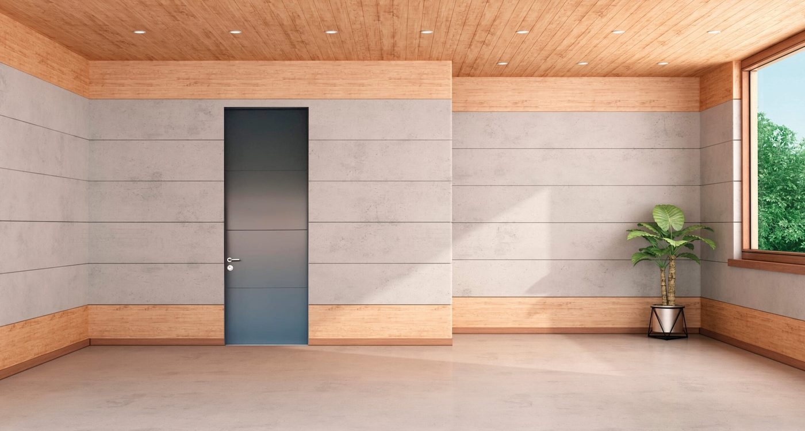
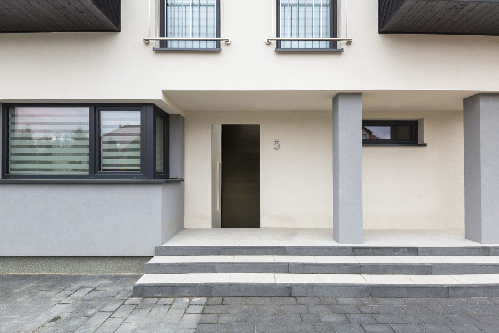
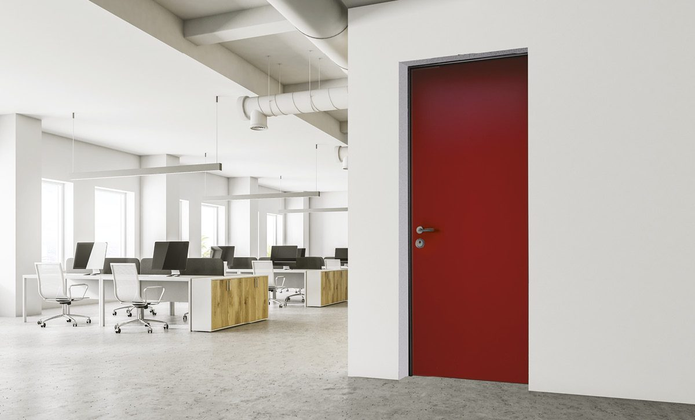
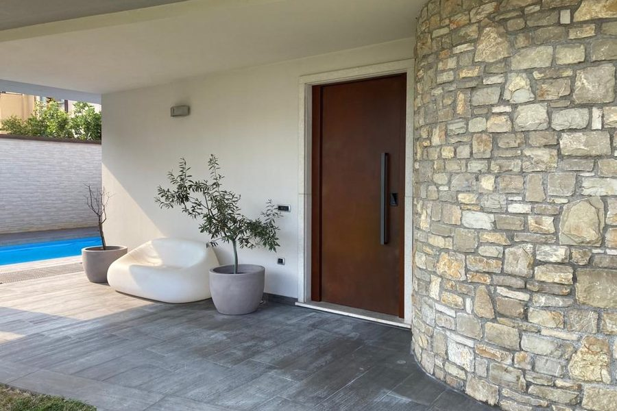
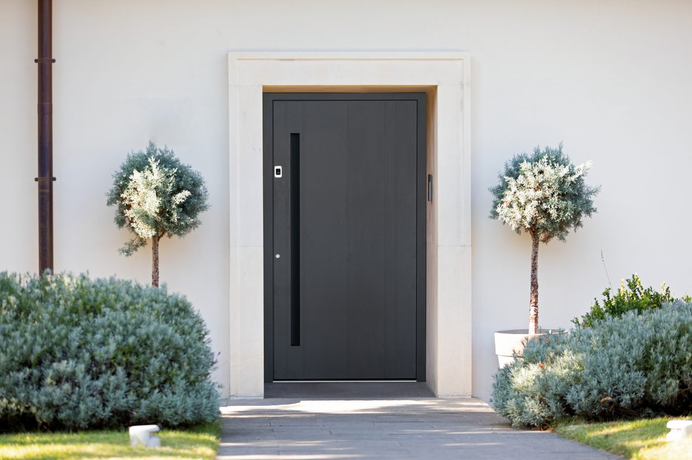

Aluminium-Haustür
Trotzt jedem Wetter, braucht kaum Pflege und kommt in jeder RAL-Farbe. Die häufigste Wahl an modernen Fassaden.
- Kaum Pflege nötig
- Schlanke, moderne Profile
- Alle RAL-Farben und Dekore
Ihre Haustür aus Aluminium oder Holz, auf Maß gebaut. Je nach Modell einbruchhemmend, mit Mehrfachverriegelung und auf Wunsch mit Fingerprint oder Smart Lock. Im Design passend zu Ihrem Garagentor.

Die Haustür ist die Visitenkarte Ihres Hauses, und sie soll Ungebetene draußen halten. Wir bauen Ihre Tür auf Maß, stimmen Design und Farbe auf Haus und Garagentor ab und rüsten sie mit genau der Sicherheitstechnik aus, die Sie brauchen.
Ob Wohnhaus oder Gewerbeeingang: Es kommt darauf an, wie die Tür genutzt wird, wie sie aussehen soll und wie viel Schutz Sie wünschen.

Trotzt jedem Wetter, braucht kaum Pflege und kommt in jeder RAL-Farbe. Die häufigste Wahl an modernen Fassaden.

Warm in der Ausstrahlung, mit natürlicher Maserung. Das passende Gegenstück zum Echtholz-Garagentor, lasiert oder deckend gestrichen.

Robust gebaut für Nebeneingänge, Büros und Betriebsgebäude. Auf Wunsch öffnet sie per Zutrittstechnik statt mit Schlüssel.

Dekor, Farbe und Griffdetails Ihres Tors übernehmen wir für die Haustür. So wirkt die ganze Fassade wie aus einem Guss.
Seitenteile und Oberlichter fertigen wir passend dazu. Sie bringen mehr Tageslicht in den Eingang.
Designs ansehenJe nach Modell einbruchhemmend, mit verstärktem Rahmen und Sicherheitsglas.
Mehrere Schließpunkte in Rahmen und Falz sichern die Tür rundum, nicht nur am Schloss.
Öffnen per Fingerabdruck, Code oder App. Auf Wunsch eingebunden in Ihr Smart Home.
Gedämmte Türblätter und umlaufende Dichtungen halten den Eingangsbereich warm und leise.
Glas neben und über der Tür holt mehr Licht in den Flur.
Aufmaß, Montage und späteres Nachjustieren übernehmen unsere eigenen Servicetechniker.
Richtwerte für Ihre Planung. Die genaue Ausführung legen wir beim Aufmaß gemeinsam fest.
| Ausführungen | Aluminium-Haustür, Holz-Haustür, Sicherheitstür für Gewerbe und Nebeneingang |
|---|---|
| Maße | Nach Maß, Sonderformate und Sonderhöhen auf Anfrage |
| Material | Aluminium, Echtholz |
| Oberflächen | Alle RAL-Farben, Holzdekore und Lasuren |
| Sicherheit | Mehrfachverriegelung, einbruchhemmend je nach Modell |
| Zutritt | Schlüssel, Fingerprint oder Smart Lock auf Wunsch |
| Extras | Seitenteile, Oberlichter, Wärmedämmung |
| Leistung | Beratung, Aufmaß, Lieferung, Montage und Justierung |

Das hängt vom Modell ab. Rahmen, Beschlag, Verglasung und Verriegelung lassen sich einzeln wählen. Wir beraten Sie, welche Ausstattung zu Ihrem Haus passt und wie viel Schutz sinnvoll ist.
Ja. Wir stimmen Farbe, Dekor und Details der Haustür auf Ihr Garagentor ab. So wirkt die Fassade wie aus einem Guss.
Ein Smart Lock öffnet die Tür per App, Code oder Fingerabdruck statt mit dem Schlüssel. Praktisch für Familien und alle, die oft Handwerker oder Lieferdienste ins Haus lassen. Ob es sich für Sie lohnt, besprechen wir gerne in der Beratung.
Nach dem Aufmaß bekommen Sie Ihr Angebot. Die Fertigung dauert je nach Modell und Material mehrere Wochen. Sobald der Liefertermin steht, vereinbaren wir den Montagetermin mit Ihnen.
Rufen Sie an oder schicken Sie uns Maße und ein paar Fotos. Wir melden uns innerhalb eines Werktags.